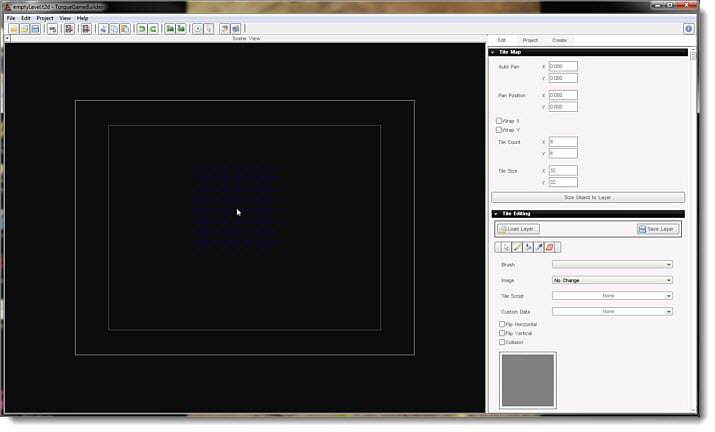
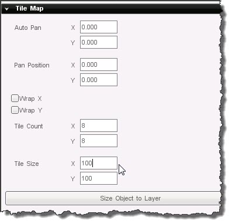

Introduction
The main use of the Torque 2D Tile Map Builder is to create a
repeating (tiling) map for a game level. Tile maps have been around for
years and are still used for modern 2D games. The artwork used in a tile
map can drastically alter the perspective of a game, such as top-down
or "3/4" views. In almost every case, a tile map will have repeating
elements.
The main advantage to using a tile map is conserving memory. Rather than
having several large images on multiple layers, you can use a single
tile map and hand paint your level. This requires a little more work and
some extra CPU processing, but the gains of memory optimization and
extended customization create some balance.
Importing Tile Map Art
Creating a tile map is a multi-step process, but a very simple one.
The following portion of this guide can be applied to all your asset
importing and setup. Loading the image will be the same process as any
other sprite. In the Create tab, click on the "Create a new ImageMap"
button.
When the file browser appears, navigate to the directory containing your spritesheet and open the image. For this guide, the tgb/resources/starterArt/images/tilemap.png artwork is used:
(click to enlarge)
After you open the artwork, a new imageMap is created. Tiles are treated
similarly to Animated Sprites. Each tile should be in a separate cell,
which means you need to edit the imageMap in the Image Builder. Double
click on the tilemapImageMap, then change the settings to resemble the
following:
(click to enlarge)
The following changes are the most important:
- Change the Cell Count X and Cell Count Y to the number of tiles for the art, 4 in this example
After saving the changes, the new imageMap preview should show a single
tile. Back in the Create tab, you should now see the final
representation of the celled ImageMap. Notice it just shows one frame,
which you can cycle through by clicking the numbers below the preview:
Creating A Tile Map
Once your artwork is loaded into the editor, the next step is to
create an actual tile layer. Like other T2D objects, this can be added
from the editor. Switch to the Create tab, then scroll down until you
see the Tilemaps section. Unless you previously created a tile layer,
there should just be a single entry:
Left click and drag the newLayer object into your scene. The editor's
interface will change to Tile Editor mode. The rest of your scene will
be darkened and a blue grid will appear where you released the left
mouse button. This represents a stock tile layer, with no modifications
or image:
(click to enlarge)

Tile Layer Properties
(click to enlarge)
- Auto Pan - Specifies the speed at which the tilemap will
automatically scroll the tiles across its surface. This makes the
tilemap operate much like a Scroller object.
- X - Horizontal scroll speed
- Y - Vertical scroll speed
- Pan Position - Manually sets the offset of the tiles on
the surface of the tilemap. This provides the ability to modify the
tiling effect by hand.
- X - Horizontal offset of tiling
- Y - Vertical offset of tiling
- Wrap - Specifies whether or not the tiles should be repeated across the surface of the tilemap.
- X - Toggle infinite tiling in the tilemap rows
- Y - Toggle infinite tiling in the tilemap columns
- Tile Count - Controls the number of tiles in the tilemap
- X - Number of rows
- Y - Number of columns
- Tile Size - Determines the dimensions of each tile in the tilemap
- X - Width of each tile
- Y - Height of each tile
Before you start painting, you will want to make sure your tile
layer is ready. The first thing you need to do is scale the actual tile
map layer. For this example, the tile layer needs to fit the entire
camera view for an iPad game. This doesn't always have to be the case.
If you can still see a blue grid on screen, press the Enter/Return key
or click on the select tool. This will switch from Tile Editing mode to
regular Scene Editor mode. Stretch the object until it fits the screen,
which is 1024x768 in this example:
(click to enlarge)
The next step is to determine the Tile Size. If you add an individual
frame from the tile's imageMap (under Static Sprites) to the scene, you
can find out how large each one is. In this example, each tile is
100x100:
To continue editing the layer, you need to switch back to Tile Editor
Mode. To do this, simply select your layer, hover the cursor over it,
then click the "Edit this Tile map" button:
Under the Tile Map properties section, change the Tile Size X and Tile Size Y to 100:
(click to enlarge)

This will immediately change your tile layer's grid to reflect the
larger tile size. This will allow you to paint your tiles down in their
original size:
(click to enlarge)
You should notice a shaded area on your grid. This represents an area of
the tile layer you will not be able to edit. This is due to the tile
size modification. To gain access to the full area of the tile layer,
you need to increase the Tile Count. Under the Tile Map section, change
the Tile Count X to 11 and Tile Count Y to 10:
(click to enlarge)
The full area should now be available for tile painting:
(click to enlarge)

Tile Layer Editing
The tile map is now ready for editing. This part is quite simple, as
you will only be clicking and dragging on the grid to paint down tiles.
Before proceeding, it is a good idea to know what each field under Tile
Editing does:
Tile Editing Fields
(click to enlarge)
- Brush - A prefab containing settings created at
different time. For example, you can load a brush that uses a specific
frame, with Flip Vertical enabled and Collision enabled.
- Image - The imageMap used for painting
- Frame - Opens a tile palette. The palette consists of
the cells for the imageMap during CELL mode modification. The frame
numbers increase from left to right, top to bottom
- Tile Script - The text to pass to the onTileScript callback when the tile is first displayed on screen
- Custom Data - Used to define and store custom properties on a per tile basis
- Flip Horizontal - Reverses the horizontal orientation of the tile
- Flip Vertical - Reverses the vertical orientation of the tile
- Collision - Enables collisions on this specific tile
being painted. This will only work if the tile map itself has Uses
Physics, Send Physics and Receive Physics enabled
- Apply To Selection - Applies the current settings of the brush to a tile selected in the grid
- Save Brush - Saves the current brush settings to a prefab for use later
- Delete Brush - Deletes the current brush from the system
Painting
To get started, click on the Image drop down and locate the imageMap
containing the tile art. In this example, a single tilemapImageMap
exists. Only imageMaps with CELL mode enabled should be used here:
To paint a single tile, simply left click somewhere in the grid. The
tile will be added to the layer using whatever size the grid cell
allows:
(click to enlarge)
To change the tile art, click on the Frame number. This will open the palette, allowing you to pick another tile for painting:
To change the painting action, select another tool. This is located directly under the Load Layer button:
- Select - Selects a tile on the grid, including its properties
- Paint - Paints a single tile onto the grid. You can left click and drag over the grid to paint continuously
- Flood Fill - Fill in an area of the grid with the current brush. Any connected tiles of the same type will be affected by this.
- Eraser - Erases an individual tile on the grid. You can left click and drag over the grid to erase continuously
Click on the Flood Fill tool, then click on the grid. The fill will stop
when it reaches an area of the grid separated by an entire column or
row of existing tiles:
(click to enlarge)
A common practice is to fill an entire area with a base tile, then use
the eraser and other tiles to create the rest of the tile map. With a
base tile filled, select the Eraser tool and remove a section of the
grid:
(click to enlarge)
You are now free to experiment. The tile map art used for this example
has many tiles to play around with. While not perfect, the following
image represents a a body of water with a path leading up to it
(surrounded by grass and trees):
(click to enlarge)
Saving
Once you are happy with your tile map, you will want to save it out
as a layer. You should do this often as you finish important sections.
To save, click on the Save Layer button under Tile Editing:
A file browser dialog will appear. Each tile layer is saved as a .lyr file. Navigate to or create a directory to save your tile layer in. In
the following image, a new folder named tilemaps is created in the
projectFiles/game/data directory:
(click to enlarge)
Do not forget to save your scene and add the imageMap to the level's datablocks:
(click to enlarge)
When your layer, scene and datablocks are all saved you can play your
scene to get a preview of what your new tile map looks like:
(click to enlarge)
Conclusion
This concludes the introduction to tile maps in Torque 2D. Tile map
creation is 100% editor driven, allowing programmers, designers and
artists the ability to quickly create tile maps and levels. Keep in mind
your level allows multiple tile maps to exist, just like any other
sprite. You can layer them to create some really unique looking levels. |
{kind=link}
{kind=link}
{kind=link}
{kind=link}
{kind=link}
{kind=link}
{kind=link}
{kind=link}
{kind=link}
{kind=link}
{kind=link}
{kind=link}
{kind=link}
{kind=link}
{kind=link}
{kind=link}